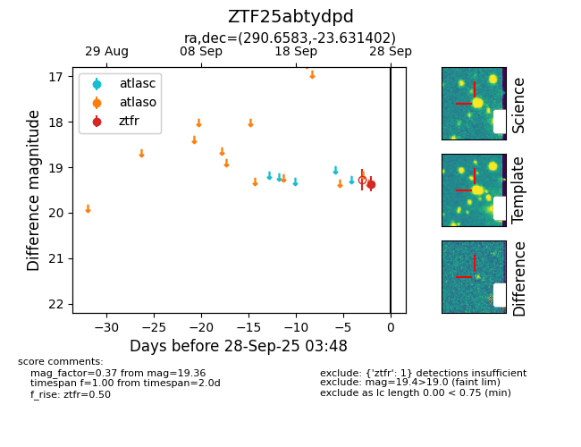

FINK: ZTF25abtydpd
Lasair: ZTF25abtydpd
ALeRCE: ZTF25abtydpd
ZTF25abtydpd (ztf,fink)
equatorial (ra, dec) = (290.6583,-23.63140)
galactic (l, b) = (14.6385,-17.06288)

last ztfr=19.36
1 ztfr detections